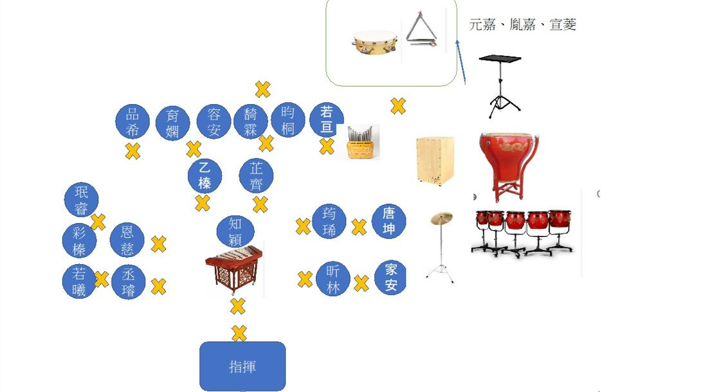

人員確認dudu（彩榛媽媽）
樂器確認Rachel（丞璿媽媽）
09:15 抵達（Coco 聯繫小人國對應窗口）運送團長、Coco會長、元嘉爸 → 側門
園內接應恩慈爸、彩榛爸、丞璿媽媽、家安爸爸與其他協助家長
抵達後先下車集合
付款由書萍協助付款（門票與便當）
成童票請 dudu（彩榛媽媽）點名時協助發放
扣除樂器搬運人員外，其餘人員由廉琪老師帶隊前往第二園區自由活動（11:30 集合用餐）
自行開車者請直接在園區門口集合
上台準備、調音團長、廉琪老師
午餐發放由書萍負責
👉 便當對應清單： 便當檢核表
👉 上下台協助：Coco、恩慈爸、彩榛爸、元嘉爸、丞璿媽、家安爸爸
👉 舞台配置： 查看配置圖
步驟一：樂器搬下台
搬運Coco、恩慈爸、彩榛爸、元嘉爸、丞璿媽、家安爸爸
步驟二：樂器撤回遊覽車（經側門）
側門開車團長、Coco會長、元嘉爸
協助搬運恩慈爸、彩榛爸、家安爸爸
人員確認dudu（彩榛媽媽）
樂器確認Rachel（丞璿媽媽）
17:00 抵達白雲國小（全體家長協助搬運樂器）
去程：遊覽車＋自駕都需確認
回程：僅確認遊覽車人數